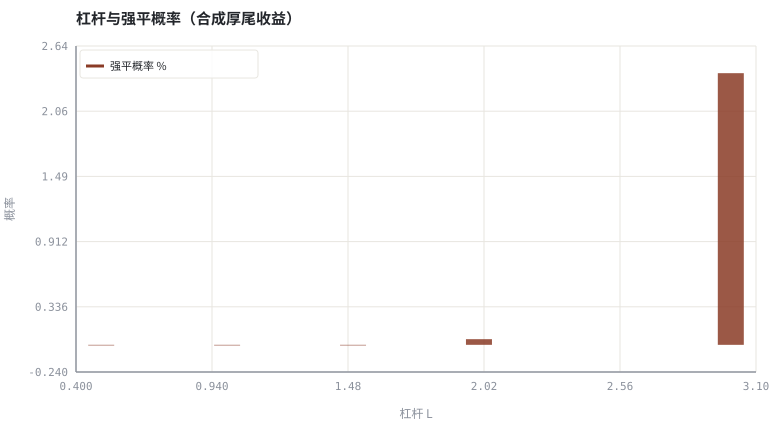
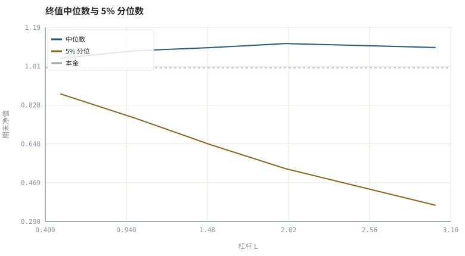

第 30 章仓位、杠杆、VaR/CVaR 与凯利上界
风险管理不是预测下跌，而是保证「预测错了也还活着」。
本章位置：第 29 章决定「怎么下单」，本章决定「下多大」；第 31 章 · 投资政策说明书与长期复盘 把这些约束写成一份可长期执行的契约。
杠杆是给随机过程加了一条吸收壁：没有壁时只看期望，有壁时必须看路径。风控规则就是给系统加 circuit breaker，让一次尾部事件不至于终止整个进程。
- 能用蒙特卡洛估计不同杠杆下的强平概率与尾部损失。
- 能计算历史 VaR / CVaR 并说明其边界。
- 能写出凯利公式并解释为什么实盘常用其分数。
- 能把仓位上界写成可执行、可监控的硬约束。
§知识点地图
每个知识点都配了 1～2 个扩展学习链接；本章完整资源清单见 扩展学习。
| # | 知识点 | 扩展学习 | 状态 |
|---|---|---|---|
| 1 | 仓位与风险预算 | Modern portfolio theory · Value at risk | 正文已覆盖 |
| 2 | 杠杆与逐日盯市 | Margin (finance) · Kelly criterion | 正文已覆盖 |
| 3 | 维持保证金与强平 | Margin (finance) · Futures contract | 正文已覆盖 |
| 4 | 蒙特卡洛模拟 | Monte Carlo method · Value at risk | 正文已覆盖 |
| 5 | VaR 与 CVaR | Value at risk · Expected shortfall (CVaR) | 正文已覆盖 |
| 6 | 凯利准则 | Kelly criterion · Drawdown (economics) | 正文已覆盖 |
| 7 | 分数凯利与参数不确定性 | Kelly criterion · Drawdown (economics) | 正文已覆盖 |
| 8 | 尾部风险与压力测试 | Expected shortfall (CVaR) · Heavy-tailed distribution | 正文已覆盖 |
§30.1杠杆把分布整体拉伸，也把尾部拉断
r_杠杆 ≈ L · r − (L − 1) · 融资成本 | 净值 = 1 + Σ L·r_t（逐日盯市）
杠杆不仅放大波动，还引入了路径依赖：一次足够大的回撤会触发维持保证金与强平，之后即使标的反弹，账户也无法复原。因此杠杆策略不能用终值期望评估，必须看吸收壁（ruin barrier）与尾部。
§30.2凯利是一个上界，不是一个目标
f* ≈ μ / σ²（连续近似） | 实盘常用 f = c · f*，c ∈ [0.25, 0.5]
凯利最大化长期几何增长率，但它假设 μ、σ 已知且分布稳定。现实中参数估计误差、厚尾与融资约束都会让全凯利过于激进；更严重的是，几何增长率最优并不意味着回撤可承受。把凯利值当上界、再用最大回撤与保证金约束往下压，是更稳健的顺序。
§30.3把风险写成监控规则
| 约束 | 可监控的量 | 触发动作 |
|---|---|---|
| 单一标的 ≤ 10% | 每日收盘权重 | 超限次日减仓 |
| 组合杠杆 ≤ 1.5 | 总敞口 / 净值 | 禁止新开仓 |
| 回撤 ≤ 15% | 相对历史峰值 | 降杠杆并复核假设 |
| CVaR_95 ≤ 3% | 滚动模拟尾部均值 | 暂停策略、检查厚尾 |
先定「最大可承受损失」，再定仓位；不要先看到预期收益，再倒推一个能解释它的杠杆。
§Python 分析实例
实验 30-1 · 杠杆、强平概率与 CVaR 的蒙特卡洛
#!/usr/bin/env python3
# -*- coding: utf-8 -*-
"""模拟含厚尾的日收益，扫描杠杆，估计强平概率、终值分位数与 CVaR。
数据为合成数据或模型示意，仅用于教学，不构成投资建议。
"""
from __future__ import annotations
import math
import pathlib
import random
import statistics
import sys
sys.path.insert(0, str(pathlib.Path(__file__).resolve().parents[3] / "tools"))
from chart import Chart, candlestick, heatmap, BLUE, RED, GREEN, AMBER
FIG = pathlib.Path(__file__).resolve().parents[1] / "fig"
FIG.mkdir(exist_ok=True)
random.seed(7)
# ---- 参数区 ----
N_PATHS, N_DAYS = 2000, 250
LEVERAGES = (0.5, 1.0, 1.5, 2.0, 3.0)
MU, SIG = 0.0004, 0.012
P_STRESS, STRESS_MULT = 0.02, 4.0
RUIN_BARRIER = 0.25 # 净值低于初始的 25% 视为触发强平
ANN = 252
# ---- 计算与作图 ----
rng = random.Random(7)
kelly = MU / (SIG ** 2)
rows = []
for lev in LEVERAGES:
finals, ruins = [], 0
for _ in range(N_PATHS):
eq = 1.0
ruined = False
for _d in range(N_DAYS):
sig = SIG * STRESS_MULT if rng.random() < P_STRESS else SIG
r = rng.gauss(MU, sig)
eq *= (1 + lev * r)
if eq <= RUIN_BARRIER:
ruined = True
break
finals.append(eq)
ruins += 1 if ruined else 0
finals.sort()
k = max(1, int(0.05 * len(finals)))
cvar = statistics.fmean(finals[:k])
rows.append((lev, ruins / N_PATHS, statistics.median(finals), finals[k - 1], cvar))
c = Chart(FIG / "30-ruin.svg", "杠杆与强平概率（合成厚尾收益）", xlabel="杠杆 L", ylabel="概率")
c.bars([x[0] for x in rows], [100 * x[1] for x in rows], RED, label="强平概率 %")
print("强平图:", c.save())
t = Chart(FIG / "30-terminal.svg", "终值中位数与 5% 分位数", xlabel="杠杆 L", ylabel="期末净值")
t.line([x[0] for x in rows], [x[2] for x in rows], BLUE, label="中位数")
t.line([x[0] for x in rows], [x[3] for x in rows], AMBER, label="5% 分位")
t.hline(1.0, "#9aa6b2", label="本金")
print("终值图:", t.save())
print("凯利 f*=%.2f（上界）| 强平概率 L=1: %.1f%% L=3: %.1f%%" %
(kelly, 100 * rows[1][1], 100 * rows[-1][1]))
print("L=3 终值中位=%.3f 5%%分位=%.3f CVaR95=%.3f | 年化波动=%.1f%%" %
(rows[-1][2], rows[-1][3], rows[-1][4], 100 * SIG * math.sqrt(ANN)))操作：把 P_STRESS 设为 0（正态分布），比较 L=3 的强平概率；再调到 0.05 看尾部恶化。 预期与判读：厚尾 + 杠杆会显著提高触及吸收壁的概率；终值中位数可能随杠杆上升，但 5% 分位与 CVaR 明显恶化。凯利值是上界，实盘还要被回撤与保证金约束继续压低。
改参数看趋势：把 RUIN_BARRIER 提高到 0.5（更严格的保证金），强平概率会成倍上升。 文件位置：part6/30-risk-sizing/code/30-risk.py


代码块右上角可一键复制；仓库里的 code/*.py 由 tools/extract_code.py 从这些代码块自动抽取。脚本只用标准库、固定 random.seed(7)，运行后写出 fig/*.svg；批量运行用 ./tools/run_python.sh。
§本章参考资料
按本章知识点挑选的精读资料；更多检索入口见 扩展学习。
Expected shortfall (CVaR)
百科 · 参考资料尾部超过 VaR 的平均损失
怎么用：尾部平均损失，相对 VaR 更保守https://en.wikipedia.org/wiki/Expected_shortfall
Kelly criterion
百科 · 参考资料长期增长率最优的仓位上界
怎么用：长期增长率最优仓位与其实用限制https://en.wikipedia.org/wiki/Kelly_criterion
Margin (finance)
百科 · 参考资料融资杠杆、维持保证金与强平
怎么用：融资杠杆、维持保证金与强平规则https://en.wikipedia.org/wiki/Margin_(finance)
§常见误区
- 用正态假设估计杠杆产品的尾部风险。
- 把凯利值当成推荐仓位，忽略参数估计误差。
- 只看终值期望，不看强平概率与路径。
- 把风险阈值写成事后解释，而不是事前触发动作。
§习题与思考
- 推导
f* ≈ μ/σ²的来源（对几何增长率求导）。 - 在示例里加入融资成本，观察高杠杆的终值中位数如何变化。
- 写出一份包含四条硬约束的监控配置，并说明各自的触发动作。
§扩展学习
以下资料按本章知识点挑选，可直接精读或对照真实数据；知识点地图里每一条也挂了 1～2 个直达链接。
- Value at risk（百科）：分位数意义下的潜在损失
Value at risk - Expected shortfall (CVaR)（百科）：尾部超过 VaR 的平均损失
Expected shortfall (CVaR) - Kelly criterion（百科）：长期增长率最优的仓位上界
Kelly criterion - Margin (finance)（百科）：融资杠杆、维持保证金与强平
Margin (finance) - Monte Carlo method（百科）：用模拟逼近分布与尾部风险
Monte Carlo method
继续扩展：在 Google Scholar 检索本章相关论文 · 在 MIT OCW 检索配套课程 · 在 arXiv 检索预印本 · 全书参考资源总表 · 附录 A 速查与链接总表
§延伸阅读与内链
- 第 02 章 · 收益与风险的可计算定义 尾部度量；第 12 章 · 期权 payoff、平价关系与希腊字母 期权卖方风险；第 31 章 · 投资政策说明书与长期复盘 投资政策说明书。